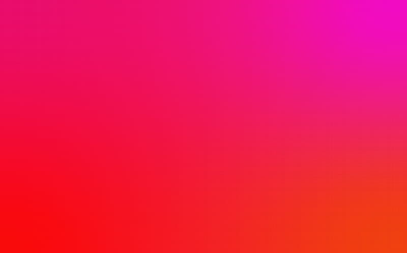

aqui tenemos unos degradados con azul que se ven muy bonitos y se pueden usar para fondos para dar un toque muy bonito, existen mas combinaciones con azul y este es solo un ejemplo de los muchos que hya por internet.

aqui tenemos unos degradados con azul que se ven muy bonitos y se pueden usar para fondos para dar un toque muy bonito, existen mas combinaciones con azul y este es solo un ejemplo de los muchos que hya por internet.
ahora tenemos una bonita combinacion de colores magenta, una combinacion de colores mucho mas intensa y tambien como no muy atractiva. se puede mezclar muy bien con el rojo.
y por ultimo tenemos unos degradados de color verde tambien muy bonitos, hacen buena combinacio con el azul y con varios colores mas, en general todos los colores tienen diversas combinaciones que pueden quedar muy bien.